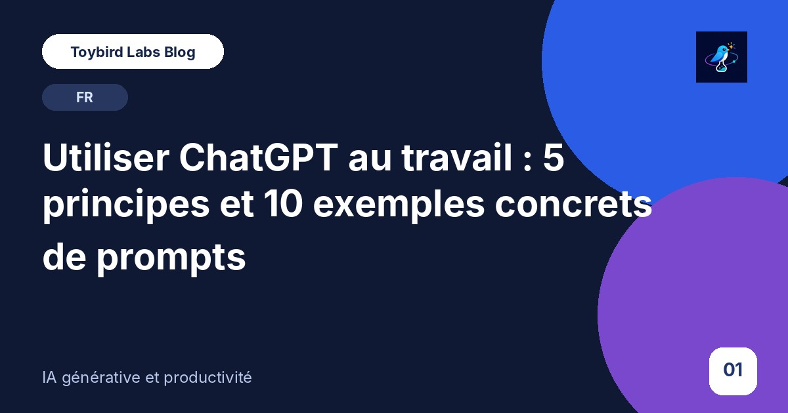
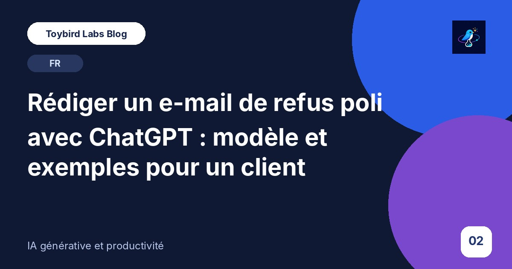
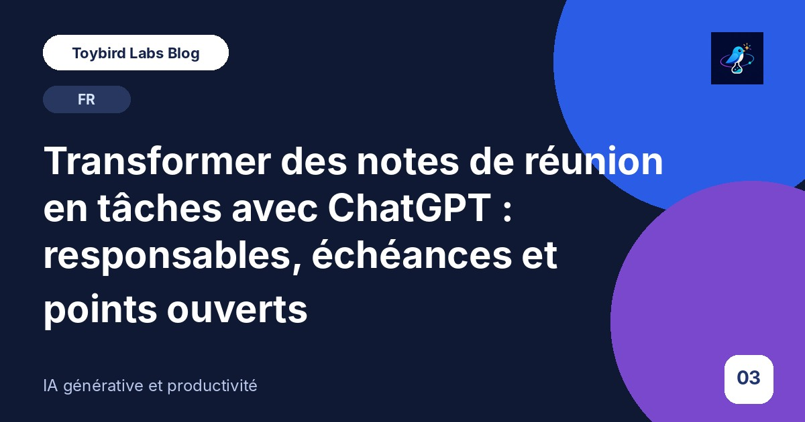
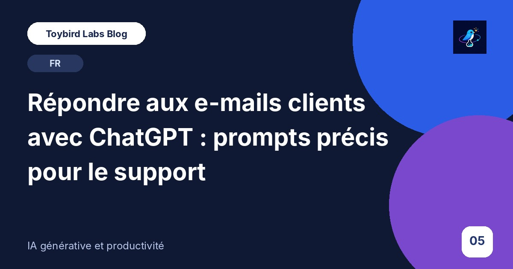
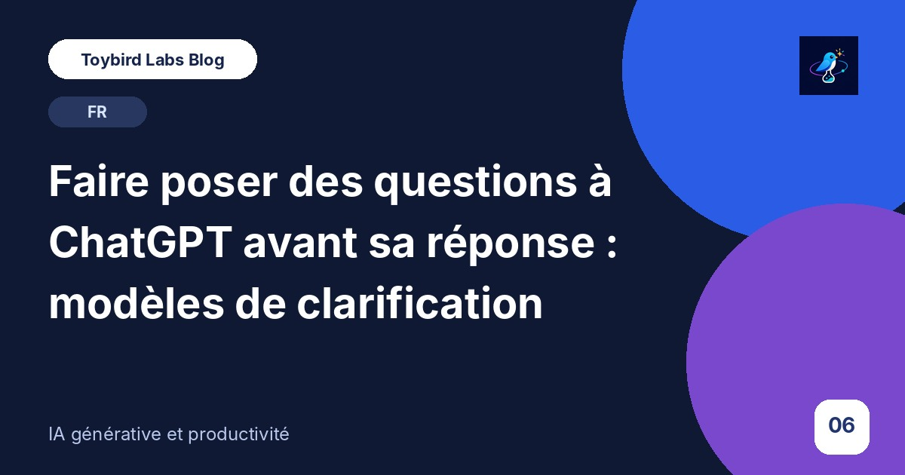
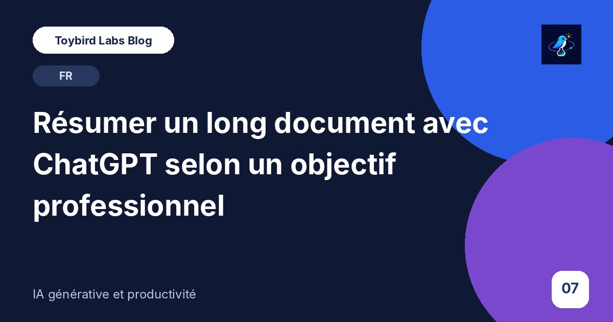
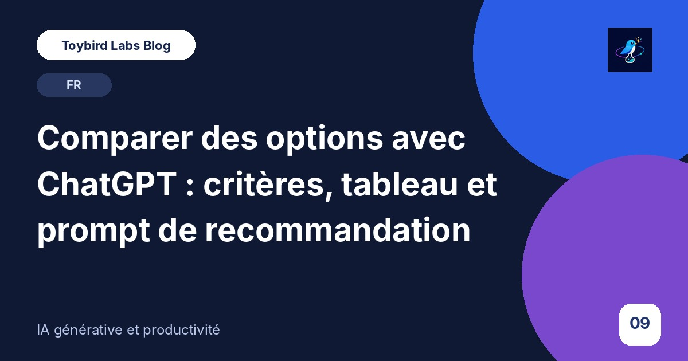
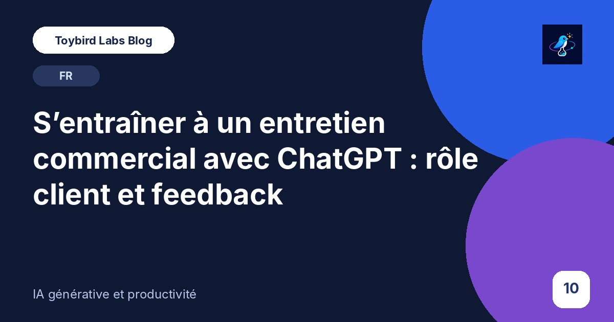

Toybird Labs Blog
Des idées concrètes pour mieux travailler et apprendre
Des guides pratiques pour utiliser l’IA générative au travail et mieux exploiter les applications Toybird Labs.
Articles
À lire en premier

Utiliser ChatGPT au travail : 5 principes et 10 exemples concrets de prompts
Apprenez à mieux formuler vos demandes à ChatGPT au travail grâce à cinq principes et dix exemples pour les e-mails, réunions, synthèses, comparaisons, recherches et simulations commerciales.
Guides pratiques par tâche

Rédiger un e-mail de refus poli avec ChatGPT : modèle et exemples pour un client
Utilisez ChatGPT pour refuser clairement et respectueusement la demande d’un client ou partenaire. Modèle réutilisable, exemples de délai, remise et périmètre, et liste de contrôle.

Transformer des notes de réunion en tâches avec ChatGPT : responsables, échéances et points ouverts
Organisez des notes de réunion avec ChatGPT et extrayez décisions, tâches, responsables, échéances et points non résolus sans inventer d’information.
Pourquoi ChatGPT répond à côté et comment corriger la réponse avec une relance
Comprenez pourquoi une réponse ChatGPT peut être trop longue, trop générale, destinée au mauvais public ou mélanger faits et suppositions, puis corrigez-la avec une relance ciblée.

Répondre aux e-mails clients avec ChatGPT : prompts précis pour le support
Rédigez des réponses de support avec ChatGPT à partir du message initial, des faits confirmés, des inconnues et des prochaines actions. Modèle réutilisable inclus.

Faire poser des questions à ChatGPT avant sa réponse : modèles de clarification
Lorsque vous ne savez pas quelles informations fournir, demandez à ChatGPT de poser des questions avant de répondre. Exemples une par une, trois maximum et choix multiples.

Résumer un long document avec ChatGPT selon un objectif professionnel
Résumez un rapport, une politique ou une proposition avec ChatGPT en définissant le lecteur, la décision, les rubriques et les faits à conserver.

Adapter un texte à des clients, dirigeants ou équipes avec ChatGPT
Adaptez la même information pour un client, un dirigeant, une équipe interne ou un débutant avec ChatGPT. Modèle pour public, ton, longueur et faits à préserver.

Comparer des options avec ChatGPT : critères, tableau et prompt de recommandation
Comparez produits, fournisseurs, offres ou projets avec ChatGPT en définissant critères, priorités, données manquantes et règles de recommandation.

S’entraîner à un entretien commercial avec ChatGPT : rôle client et feedback
Utilisez ChatGPT comme client réaliste pour vous entraîner à la vente. Définissez le rôle, l’étape, les objections, une question à la fois et les critères de feedback.